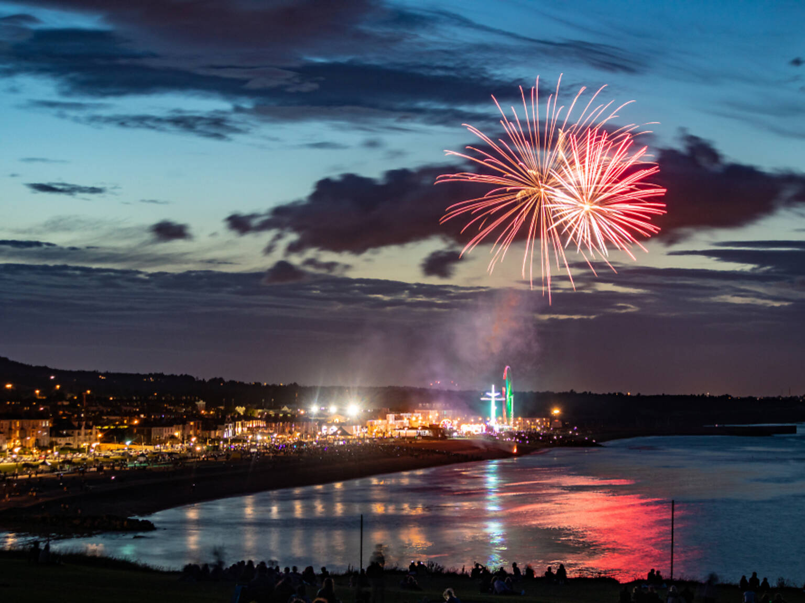

Wonderlust travels
Embark on an unforgettable journey with "Wanderlust Travels"
as we take you on a global exploration of breathtaking destinations
and cultural wonders.
Book herePuerto Vallarta, Mexico
Puerto Vallarta's palm-fringed beaches, secluded coves and emerald waters just might be the Mexico you've dreamed of. Slowly becoming a fan-favorite among vacation seekers, it is home to some of the finest all-inclusive resorts, with easy access to authentic Mexican culture and cuisine.
Cuenca, Ecuador
It's a modern-day treasure trove of history, culture and natural beauty. Cuenca packs a mighty punch when it comes to culture. It’s an architectural beauty whose historic centre was declared a UNESCO World Heritage Site in 1999.It’s home to many artisans and artists, who showcase their work at the art festivals.
Srebrenik, Bosnia and Herzegovina
Arguably Europe’s most underrated destination, Bosnia and Herzegovina is packed with charming towns, and Srebrenik (87 miles north of Sarajevo) is as charming as it gets.Add delicious food, vibrant cafés and graceful mosques, and you’ve got a darling waiting to be discovered.
Burlington, Vermont
Burlington’s charm as a waterfront University town is established, but with five Vermont chefs and eateries recently selected as semifinalists for the 2023 James Beard awards, it’s becoming one of the country’s unmissable food and drink destinations.
Bray, Ireland
It was the arrival of the railway in 1854 that made Bray, just twelve miles south of Dublin, so popular it became known as the Brighton of Ireland. After years of decline, its mile-long Victorian seafront now buzzes with cafés. Stroll from the harbour along the esplanade to the 800-foot high Bray Head.

Eastern Highlands, Zimbabwe
While most travellers to Zimbabwe will make a beeline for the majestic Victoria Falls or the renowned Hwange National Park, the country’s eastern border is home to a place of equally astonishing beauty that has remained relatively unknown. It’s home to Mutarazi Falls, Zimbabwe’s highest waterfall, where you can zipline.
Karpathos, Greece
Arguably Europe’s most underrated destination, Bosnia and Herzegovina is packed with charming towns, and Srebrenik (87 miles north of Sarajevo) is as charming as it gets.Add delicious food, vibrant cafés and graceful mosques, and you’ve got a darling waiting to be discovered.
Turku, Finland
There’s a longstanding rivalry between the Finnish cities of Turku and Helsinki – and rightly so. Turku, the country’s second city and historic capital is every bit as spectacular as Helsinki. Nicknamed the ‘Paris of Finland’ thanks to its waterside charms on the Aura River and thriving café and canteen culture